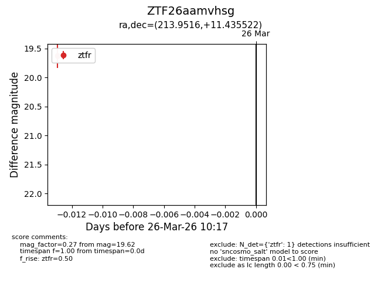
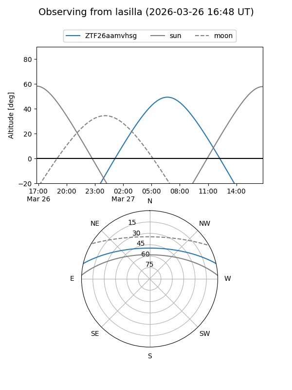
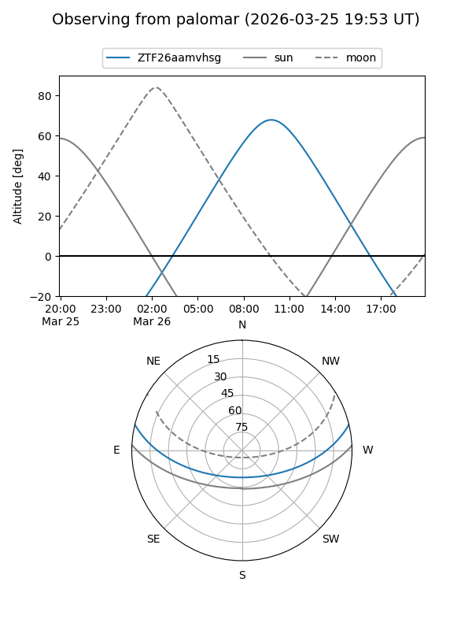

ZTF26aamvhsg
Target ZTF26aamvhsg at 2026-03-26 10:19
Aliases and brokers:
FINK: link
Lasair: link
ALeRCE: link
alt names
ZTF26aamvhsg (ztf,fink_ztf)
Coordinates:
equatorial (ra, dec) = 213.9516,+11.43552
equatorial (HMS+DMS) = 14:15:48.38,+11:26:07.88
galactic (l, b) = (358.6405,+64.72692)
Flags:
Photometry:
last ztfr=19.62
1 ztfr detections
Lightcurve

Visibility


Additional plots